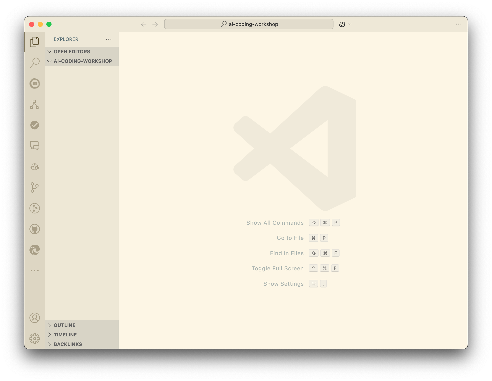
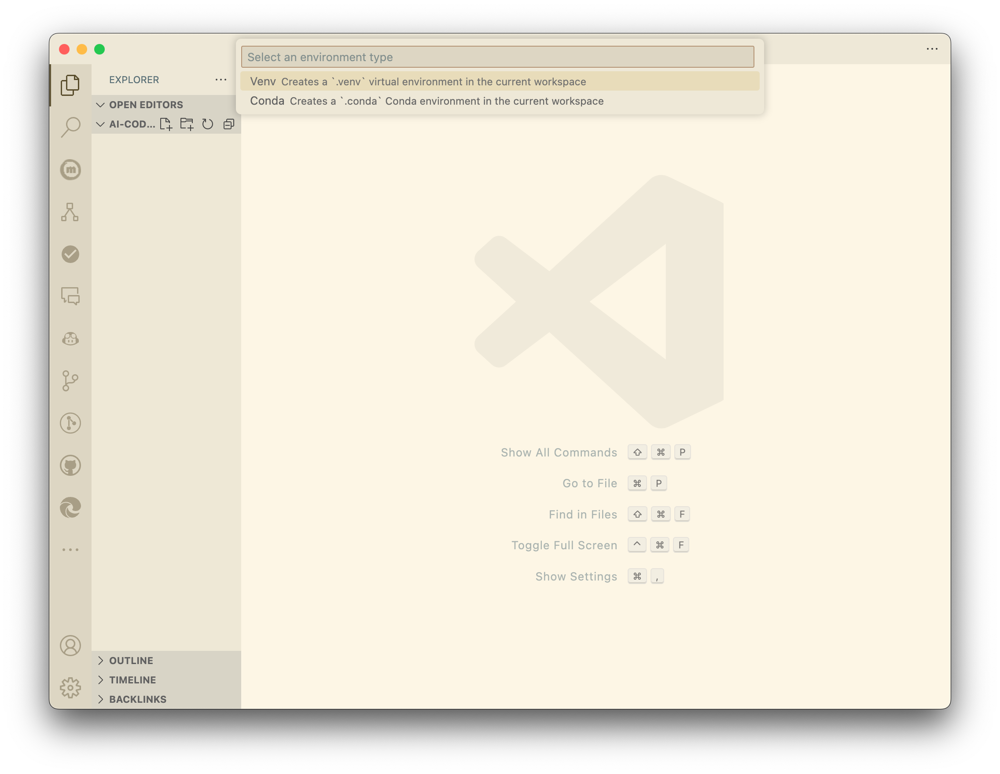
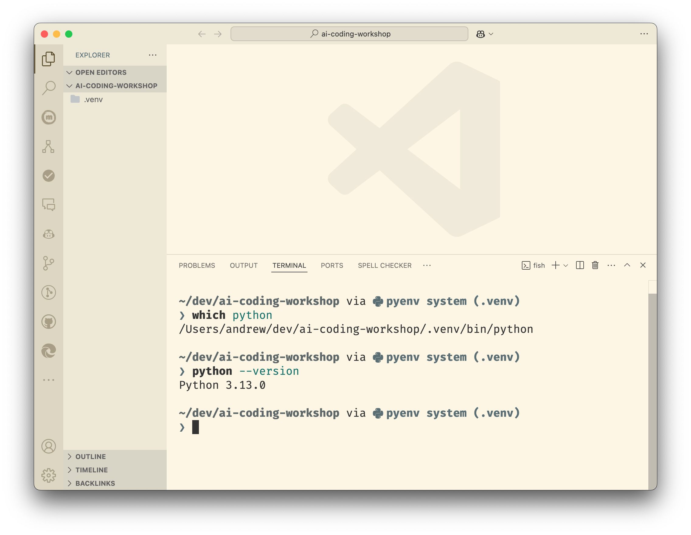
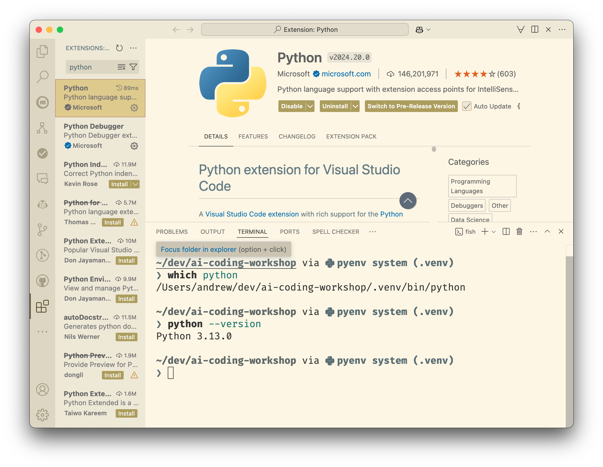
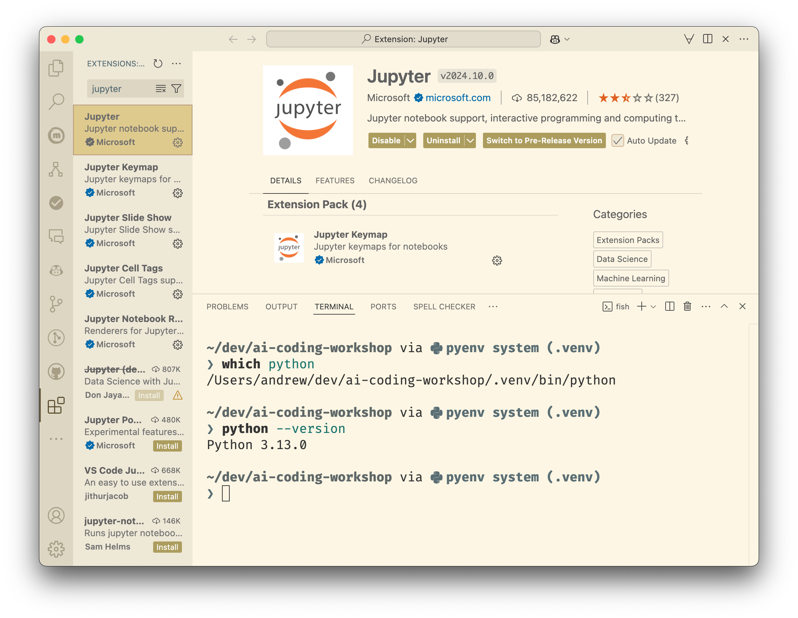

Setup Coding Environment
![]()
In this workshop, we will be working with the latest version of Python, the VSCode IDE, and a local development environment. If you already have Python installed, you can skip these steps.
If you want to follow a video tutorial, this is a really good introduction on how to install Python and set up a local development environment using VSCode:
If you want to follow a written tutorial, here are the steps to getting Python and VSCode set up on your computer:
Install Python
Windows
If you are using Windows, you can either install Python from the Microsoft Store or from the Python website. Make sure to install either the latest version (3.13) or version 3.12.7.
MacOS
If you are using MacOS, you can install Python from the Python website, either the latest version (3.13)or version 3.12.7.
However, I recommend using Homebrew to install Python. The following is a good guide to installing Python with Homebrew: Brew Install Python.
Linux
If you are using Linux, you can install Python using the package manager for your operating system. For example, on Ubuntu, you can install Python using sudo apt install python3.
Alternative:
An alternative way to install Python on all platforms is to use Miniforge. This is miniforge is the community (conda-forge) driven minimalistic conda installer. It can manage Python versions and dependencies in isolated environments. We will not be using conda to manage environments in this workshop, but will use venv and pip instead.
Install VSCode
Next, you will need to install VSCode. You can download it from the VSCode website.
The following is a comprehensive guide to setting up VSCode for Python: VSCode Python Tutorial.
Create a workspace
We will create a test workspace in VSCode. First, create a directory on your computer to store the workspace. Then, open VSCode and select the option to open the folder. Once you have opened the folder in VSCode, you are in a workspace.

Set up a Python environment
Use the following steps to set up a Python environment in VSCode.
- Open the Command Palette (Ctrl+Shift+P on Windows/Linux, Cmd+Shift+P on MacOS)
- Select
Python: Create Environment - Select
venv

Select the Python version you installed earlier (3.13 or 3.12.7)
Open the Terminal in VSCode by selecting
Terminal>New Terminal
Run the following commands to verify that the Python version is correct:
which python and
python --versionThe output of which python should be the path to the Python installed in your virtual environment, and the output of python --version should be the version you installed earlier (3.13 or 3.12.7).

Install Python extensions
Open the Extensions view by clicking on the Extensions icon in the Activity Bar on the side of the window or by pressing Ctrl+Shift+X or Cmd+Shift+X. Search for Python and install the extension. This should also install the Pylance extension, which is a Python language server.

I would also recommend installing the Jupyter extension. This will allow you to use Jupyter Notebooks in VSCode.

Further extensions that will be useful for this worlkshop are:
Data WranglerRainbow CSV
Recommended: Install Github Copilot
I strongly recommend installing the GitHub Copilot extension. Github Copilot is an AI coding assistant. Futher information on Copilot can be found here.
While there is an increasingly large number of AI coding assistants, some of which are considere by many to be an improvement over Microsofts offering, Github Copilot is free to use if you work at an academic institution.
You can sign up for a trial here, and then apply for an educational license here.
Alternatives to Github Copilot
Here are some alternatives to Github Copilot. They all require a subscription if you want to use the full functionality.
Reuse
Citation
@online{ellis2024,
author = {Ellis, Andrew},
title = {Setup {Coding} {Environment}},
date = {2024-11-13},
url = {https://virtuelleakademie.github.io/promptly-engineered/workshop/setup/},
langid = {en}
}